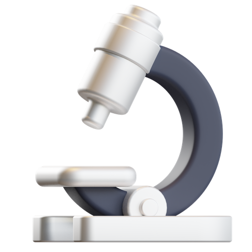
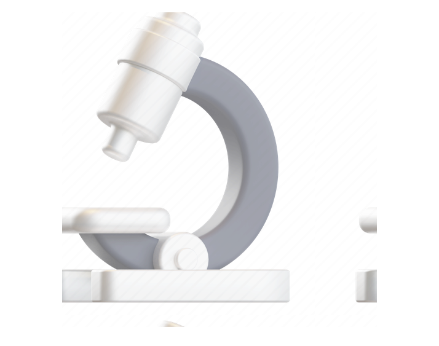

Основные методы аудита
Мы не предлагаем абсолютно все UX-активностит для клиентов, а строим процесс анализа на наиоблее эффективных методах для каждого бизнеса
Экспертная оценка
Интервью пользователей

Эвристический анализ
Юзабилити тестирование


Что клиент получает
в результате аудита?
После проведения юзабилити-анализа продукта мы готовим развернутый отчет для клиента с найденными проблемами
и рекомендациями по их устранению.
Популярные вопросы
Мы подобрали ответы на популярные вопросы про юзабилити-аудит и наши подходы
Проводите ли вы юзабилити-анализ для сложных сайтов?

Сколько времени занимает юзабилити-аудит?
Какими инструментами вы пользуетесь?
Как оценить эффективность аудита?
Предоставляете ли вы какие-то гарантии на результат улучшений?